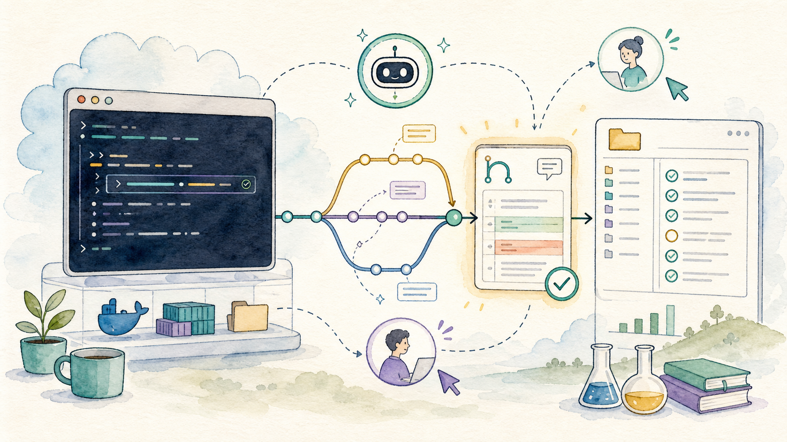
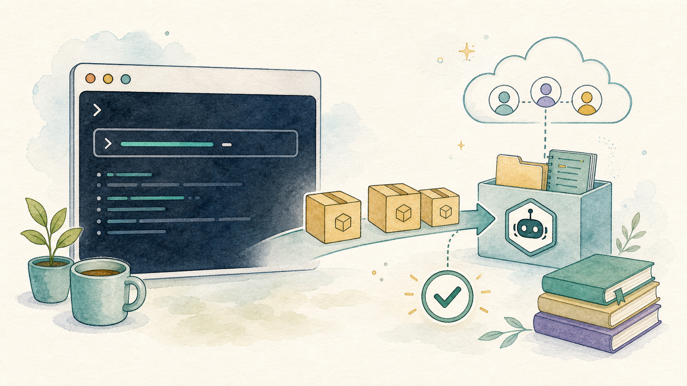
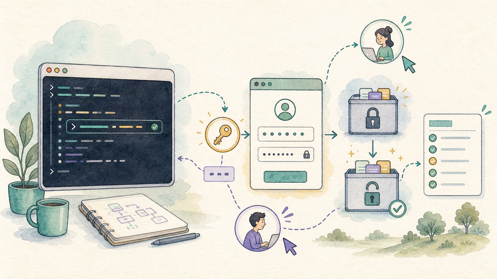
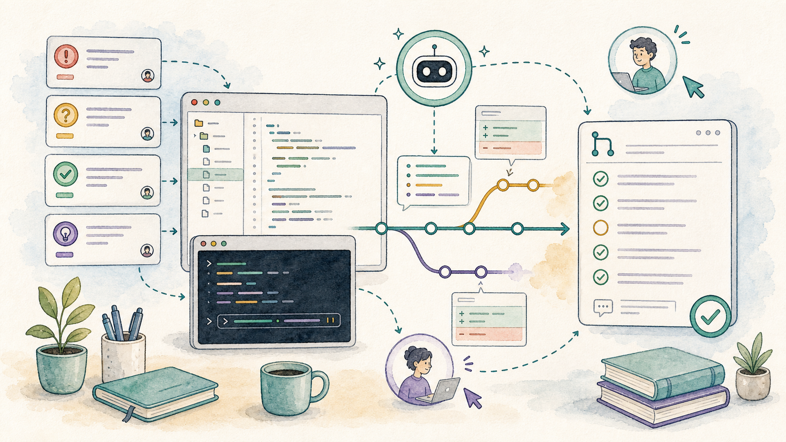
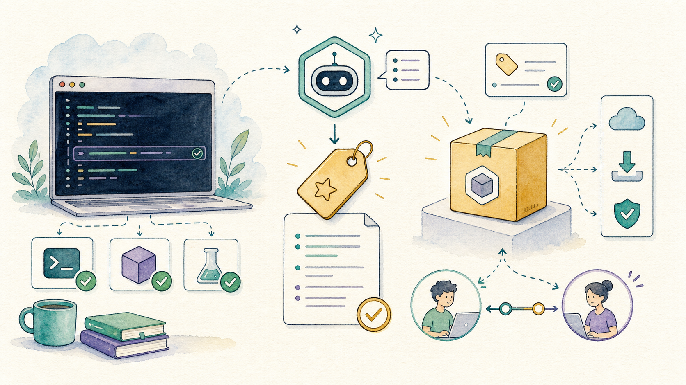

A CoCalc-AI field guide for software teams
Using GitHub from CoCalc-AI
Install gh, authenticate once, then let Codex help with
issues, pull requests, release notes, and repository maintenance
from the same collaborative project where the code runs.

GitHub becomes much more useful when it is available from the same place as the terminal, editor, notebook, chat, and agent thread. CoCalc-AI gives you that place.
This guide follows the simplest setup: install the GitHub CLI, authenticate, clone or open a repository, and ask Codex to do useful GitHub work through commands you can inspect.
The collaborative part matters. A teammate can watch the same terminal session, read the same Codex thread, review the same branch, and see exactly how an issue became a pull request.
Install the GitHub CLI
CoCalc-AI projects are Ubuntu environments. If gh is
missing, install it with apt:
sudo apt update
sudo apt install -y gh
gh --versionThe last command is not decoration. It verifies that the tool you wanted is actually on the path before you build a workflow around it.

Authenticate carefully
Run gh auth login and follow the prompts. For most
projects, GitHub.com, HTTPS, and browser or device-code
authentication are the straightforward choices.
gh auth login
gh auth statusTreat the resulting credential like a real secret. In a shared project, only authenticate when the collaborators and permission model match what you intend to do.

Work from a real checkout
A useful GitHub session starts with a real local checkout. Codex can
inspect files, run tests, commit changes, and use gh to
talk to GitHub.
gh repo clone owner/project
cd project
git status
gh repo view --webOnce the repository is local, the project becomes the shared work surface: code, logs, terminal history, chat, and GitHub state are no longer separate stories.
Useful first questions
- What branch am I on?
- What files are changed?
- Which tests should I run?
- Is there already an issue for this?
Ask Codex for GitHub-shaped work
Summarize an issue, find related code, and propose a small plan.
Make the branch, edit files, run focused checks, and commit.
Create a pull request with a clear title and useful body.
Read review comments, push fixes, and keep the trail coherent.
Use pull requests as the trail
Pull requests are where agent work becomes reviewable team work. A good PR says what changed, why it changed, and how it was checked.
git switch -c fix/notebook-export
git commit
gh pr create --fill
gh pr checks --watchThis is where CoCalc-AI’s realtime collaboration is unusual: someone else can be in the project while the PR is being prepared, watching tests, reading Codex’s reasoning, or taking over the terminal if needed.

Let releases be boring
Release work often fails because it is half memory and half shell
history. Use Codex and gh to make it explicit.
Read the merged PRs since the last tag, draft release notes, build the Linux artifact, verify its checksum, and create a draft GitHub release for me to review.
Codex can collect the facts, but the release should still be a human-reviewed artifact. The goal is not magic. The goal is a boring, inspectable process.

GitHub becomes part of the workspace
The practical pattern is simple: install gh, authenticate
intentionally, work from a real checkout, and ask Codex to make GitHub
actions visible through commands, commits, pull requests, and review
notes.
In CoCalc-AI, this is not trapped in one person’s laptop. The terminal, files, chat, agent thread, and GitHub workflow can all be shared live in the same project.